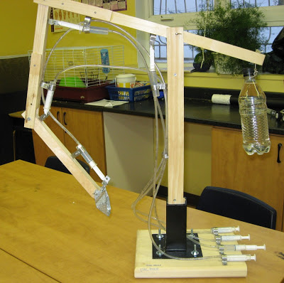
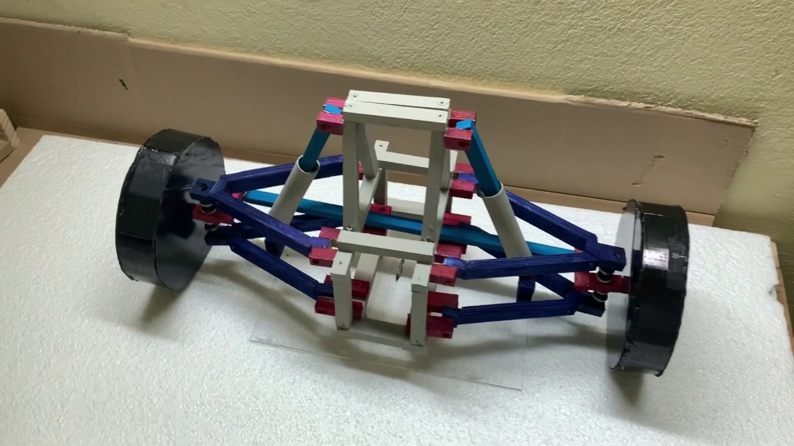
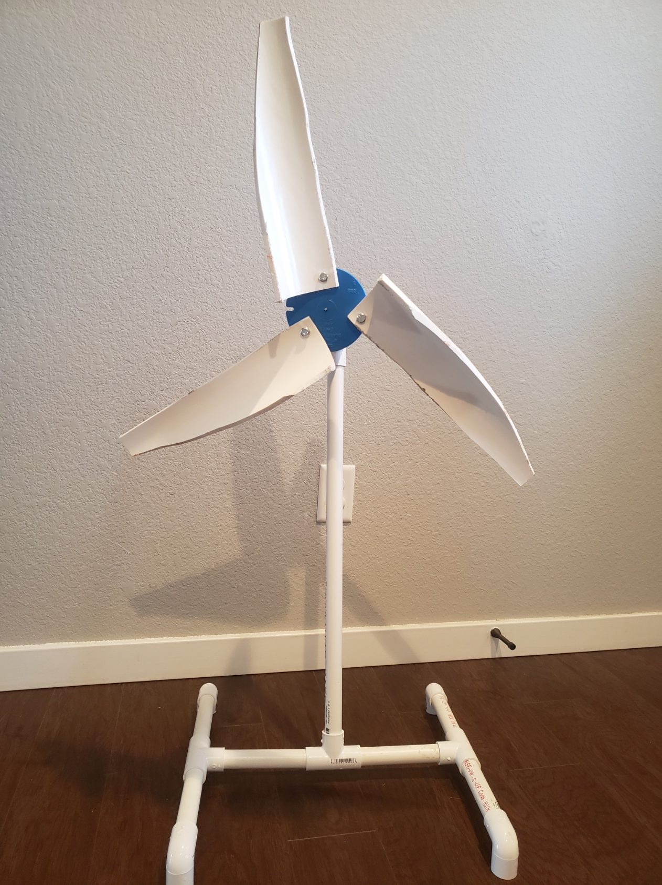
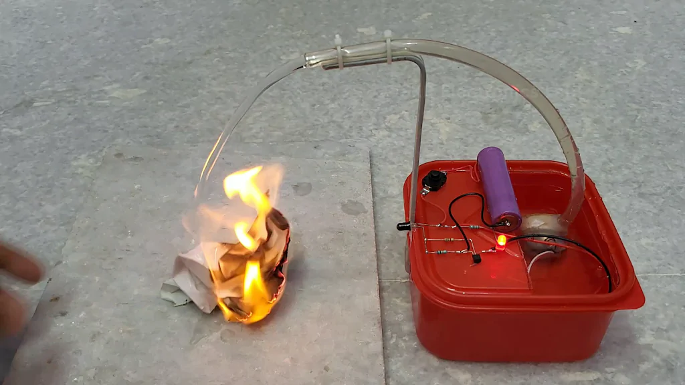
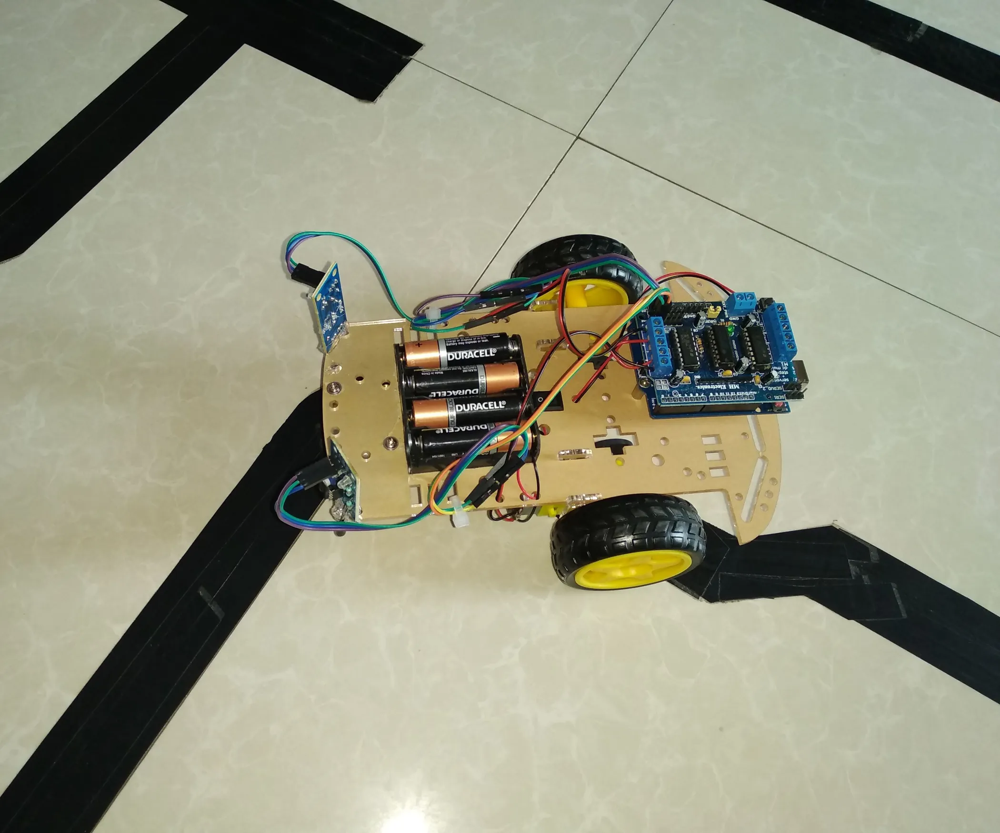
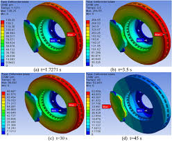
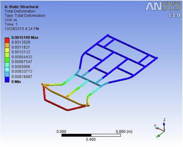

Designed a small-scale hydraulic crane model using syringes and plastic tubing to demonstrate Pascal’s Law. The system was capable of lifting small loads by transferring pressure through fluid.
This project helped in understanding basic fluid mechanics and force transmission. It also introduced concepts of mechanical advantage and real-world applications of hydraulics in heavy machinery.

Developed a basic suspension model using springs and dampers to study vibration absorption and load distribution. The system was designed to simulate how vehicles handle uneven surfaces.
Different spring stiffness and damping conditions were tested to observe their effect on stability and comfort. This project helped in understanding real-world suspension behavior and basic vehicle dynamics.

Created a small wind turbine prototype to generate electricity using airflow. The design included blades, a shaft, and a small DC motor acting as a generator.
Experimented with blade angles and shapes to improve efficiency. This project introduced renewable energy concepts and basic electrical generation principles.

Developed a basic fire detection and extinguishing system using temperature sensors and electronic components. The system automatically activated when high temperature was detected.
This project enhanced knowledge of electronics, sensors, and safety systems. It demonstrated how automation can be used in real-life emergency situations.

Built a simple robot capable of following a predefined path using IR sensors. The system used basic logic control to adjust movement based on sensor input.
This project introduced control systems, basic programming logic, and sensor integration. It improved problem-solving skills in debugging and calibration.

Performed detailed calculations to analyze braking forces, pedal ratio, and hydraulic efficiency. The aim was to optimize braking performance and safety.
This project strengthened understanding of mechanics, force distribution, and real-world vehicle dynamics. It also involved applying theoretical concepts to practical engineering problems.

Designed and fabricated a working go-kart including chassis design, steering, and braking system. The focus was on performance, safety, and structural strength.
This project involved CAD modelling, material selection, and real-world testing. It represents a complete application of mechanical engineering concepts from design to execution.